The 8 Planets of the Solar System
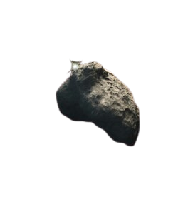
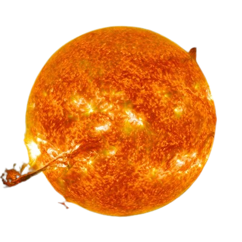
Have you ever wondered what our planets in the solar system? This article gives a short brief description of the 8 planets of our solar system so you don't have to read through tons of articles for basic information. Listed from the closest planet to our sun to the farthest. Each planet will have distance from the sun, how many days it takes to revolve around the sun, and some facts about the planet.
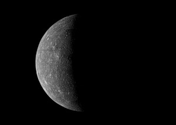
An image of MercuryDiameter 3,032 miles (4,879km)
Distance from sun: 36 million miles (57.9 million km)
Orbital Period: 88 Earth days
Rotation Period: 59 Earth days
Mercury is a dry, rocky planet with silicate rock. Simillar to the Earth's moon, mercury has lots of craters and a thin atmosphere. Closest to the sun, the planet experiences very hot and cold temperatures during it's rotation.
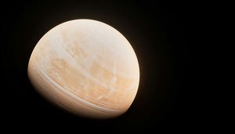
An image of VenusDiameter 7,517 miles (12,104km)
Distance from sun: 67.2 million miles (108.2 million km)
Orbital Period: 224.7 Earth days
Rotation Period: 243 Earth days
Venus is a very scorching hot planet due to its high carbon dioxide and sulfuric acid droplets not reflecting all sunlight. Causing this planet to be a desert. Very cloudy with fierce winds. This planet also spins from east to west. Meaning sunrises and sunsets are the opposite on this planet.
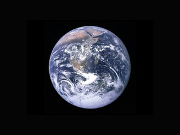
An image of EarthDiameter 7,921 miles (12,756km)
Distance from sun: 93 million miles (149.6 million km)
Orbital Period: 365.26 Earth days
Rotation Period: 23.93 hours
The planet we are currently on. Our planet is composed of mainly nitrogen, along with some oxygen as well. A ton of water too. Earth has a more thick atmosphere with an ozone layer protecting us againist deadly UV sunlight.
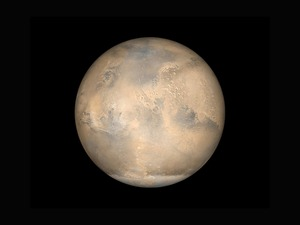
An image of MarsDiameter 4,218 miles (6,792km)
Distance from sun: 141.5 million miles (227.9 million km)
Orbital Period: 687 Earth days
Rotation Period: 24.62 hours
Mars is a rusty-red color planet with dry surface. This planet also gets much colder than Earth. Its mostly made up of carbon dioxide. Also known for it's extremely high volcano named Olympus Mons stretching over 10 miles! Also has a polar ice cap simillar to Earth.
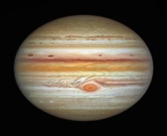
Image of JupiterDiameter 88,793 miles (142,984km)
Distance from sun: 483.4 million miles (778.4 million km)
Orbital Period: 11.86 Earth years
Rotation Period: 9.93 hours
The largest planet in the solar system. Has a very thick atmosphere with the main gases being hydrogen and helium. This is the first planet in the Outer solar system. Also famous with it's big storm called The Great Red Spot. A hurricane storm raging as your reading this.
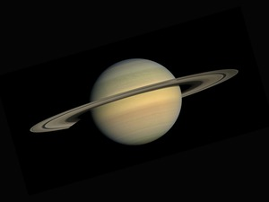
An image of SaturnDiameter 74,853 miles (120,536)
Distance from sun: 888.56 million miles (1.43 billion km)
Orbital Period: 29.46 Earth years
Rotation Period: 10.67 hours
The 2nd largest planet in the solar system. This planet is very cold and cloudy with a thick atmosphere composed of mostly hydrogen and some helium. Famous for it's large rings. There's also a pinkish storm called Dragon Storm in the southern hemisphere of the planet. Also nickname as storm alley.
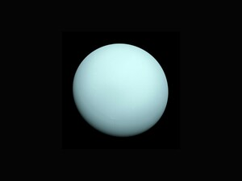
An image of UranusDiameter 31,744 miles (51,118km)
Distance from sun: 1.78 billion miles (2.87 billion km)
Orbital Period: 84 Earth years
Rotation Period: 17.24 hours
The only planet in our system to be really tilted to one side. Its thick atmosphere composes of hydrogen, helium and a littl bit of methane. The temperatures are so cold at this point, you would freeze really quickly. Uranus also has rings much smaller than Saturn though.
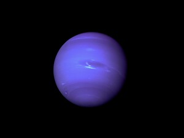
An image of NeptuneDiameter 30,757 miles (49,528km)
Distance from sun: 2.8 million miles (4.5 million km)
Orbital Period: 164.8 Earth years
Rotation Period: 16.11 hours
Our final planet in the solar system, Neptune. Our coldest planet yet, Neptune consistents of a dynamic atmosphere containing gases such has hydrogen, helium and some methane and trace gases. Neptune also has small rings around the planet. Known for it's large icy moon Triton.
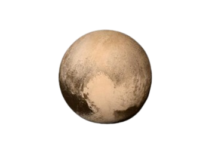
An image of PlutoDiameter 1,476 miles (2,376km)
Distance from sun: 3.7 billion miles (5.9 billion km)
Orbital Period: 247.9 Earth years
Rotation Period: 6.39 Earth days
An honorable mention, pluto. A dwarf planet that used to be considered a planet until 2006. It was renamed after it was concluded that it was too small to be a planet. Pluto is an icy rock planet almostly completely made up of nitrogen. Also known for it's moon half the size of pluto, Charon. Charon has a red north polar cap spotted in 2015.
Creator: James Moyer
Created on 9/10/2026
Last updated 9/10/2026
Created without the use of generative-AI